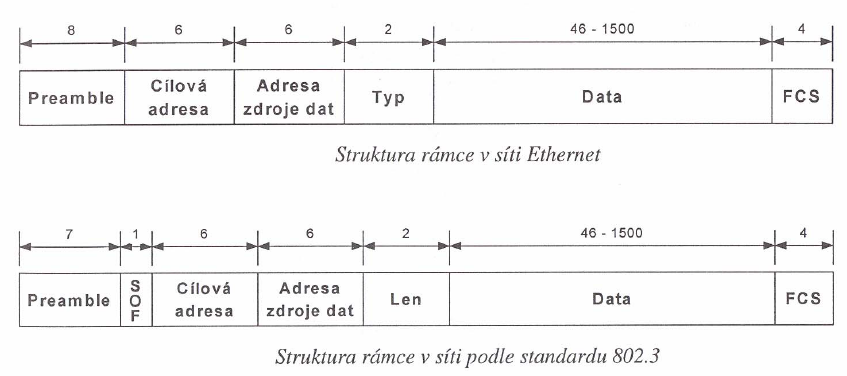

Technologie pro lokální počítačové sítě, založená na přenosech paketů. Definuje vedení a jeho instalaci, formáty paketů, protokoly a metodu řízení přístupu (CSMA/CD). Původ něnavržena firmou Xerox Corporation, pracující rychlostí10 Mbit/s s použitím přístupové metody CSMA/CD na koaxiálním kabelu. Bob Metcalfe nazval novou technologii s všesměrovým vysíláním dle teoriez 19. století o neprostupujícím “etheru”, kterým se šíří elektromagnetické vlny “Ether” net. Název je v současnosti používán s odkazem na všechny LANsítě, které používají přístupovou metodu CSMA/CD. Ethernet byl původně navržen pro sítě se sporadickým provozem a specifikace IEEE 802.3 byla odvozena z původní technologie Ethernetu v osmdesátých letech. Verze Ethernet 2.0, která byla vyvinuta firmami Digital Equipment Corporation, Intel Corporation a Xerox Corporation, je již plně kompatibilní s normou IEEE 802.3.
synchronizace vstupních obvodů. Ethernet používá osm bytů, u specifikace lEEE802.3 následuje po sedmi bytech oscilujících nul a jedniček zvláštní byte označovaný jako začátek rámce IEEE 802.3 (SOF).
Start of Frame slouží k lepší synchronizaci příjmu rámce.Adresy zdroje a příjemce jsou dvě šesti bytová pole, jejichž struktura je určena předpisem IEEE 802.3 tak, že tři první byty obsahují specifikaci dodavatele zařízení a jsou určeny standardizační organizací, a poslední tři byty jsou definovány výrobcem. Adresa zdroje je vždy typu unicast, zatímco adresa příjemce může být typem:
Type - kód typu protokolu horních vrstev, který bude použit pro zpracování přijatých dat v operacích následujících po dekódování rámce Ethernet.
Len - označení délky následujícího pole dat.
po zpracování na fyzické a linkové úrovni jsou data obsažená v rámci odeslána protokolům vyšších vrstev, specifikovaným u sítě typu Ethernet v předcházejícím poli. I když Ethernet ani ve své verzi 2 nespecifikuje žádné výplněv případě malého počtu dat, očekává se minimální délka datové části 46 bytů. IEEE 802.3 předpokládá, že data předávaná nadřízeným vrstvám specifikují použitý protokol na příjmové straně ve své datové části. Jsou specifikovány výplňové byty tak, aby v případě krátkých zpráv byla zajištěna minimální délka rámce 64 bytů. FCS - Frame Checks Sequence - kontrolní znak délky 4 byty, který je vytvářen na vysílající straně a kontrolován přijímajícím zařízením za účelem zjištění chyb při přenosu.
statické - pravidla určena už při konstrukci sítě (jsme schopni říct dopředu kdy kdo co bude dělat)
centrální - závislé na centrální jednotce, která jako jediná přiděluje právo k vysílání dané stanice
nevýhoda: výpadek centr. stanice = výpadek sítě
má i své výhody
Časový multiplex * každá stanice má k dispozici celou šířku frekvenčního pásma * sdílení přenosový kanálu (rozdělení přenosové kapacity) v závislosti na čase stanice musí být synchronizovány aby věděly, kdy mohou vysílat
úspěšnost (efektivita) je závislá na zátěži v síti (pokud chce vysílat jen 1 stanice => nízká (vysoká režie), pokud více stanic => vysoká režie - velice efektivní (nízká režie))
Naprosto nevhodné pro použití v PS (neefektivní z důvodu stálého zapínání/vypínání stanic)
Použití např. při komunikaci satelitů mezi sebou na oběžné dráze - těch je konstantní počet - v případě změně jejich počtu se překonfiguruje jejich software.
může vysílat kdokoliv limitace frekvenčním pásmem (jen určitý počet stanic) pokud je 10 pásem a každý komunikuje s každým, každá stanice musí mít 1 vysílač a 9 přijímačů => proto se v PS nepoužívá, použití v multividových vláknech (prakticky jediné); u mobilních telefonů není multiplex statický, ale je dynamicky přidělován
CENTRÁLNÍ PŘÍSTUPOVÉ METODY - moderované; s moderátorem, řízená debata 1. C.P.M. na žádost
- centrální jednotka je požádána o přidělení práva k vysílání
musí existovat další komunikační kanál, aby „hlásící se“ nerušili během probíhající jiné komunikace nebo musí existovat nějaký další způsob jak dát vědět centrální jednotce
není třeba žádná další cesta (buď někdo vysílá, nebo se centrála ptá) zvýšená režie (výzvu obdrží i ten, kdo právě nechce vysílat - jeden po druhém - nelze
řešit ani pomocí broadcastů - kdyby odpověděly 2 stanice => kolize) výpadek centra = výpadek sítě efektivita a účinnost hlavně při metodě na žádost (až 97% !)
Použití: telefonní síť (přístroj žádá o přístup k síti) družicová komunikace se zemí (tam je jedno co se rozbije, tím spíš, rozbije-li se centrální jednotka - jde to do kytek tak jako tak)
DPP (demand priority protocol) - není protokol ale přístupová metoda !!! - patří do skupiny přístupových metod na žádost
vysílat, ostatní mlčí
si jsou všechny stanice rovny - zajištění rovného přístupu všech stanic)
TOKEN RING (fyzický kruh) - přístupová metoda (pozor! je to také druh sítě užívající tuto PM a také skupina přístupových metod založených na fyzickém kruhu) pokud nemáme síť do kruhu, lze vytvořit logický kruh na úrovni linkové vrstvy (není to ale kruhová topologie sítě) = TOKEN BUS (pozor! zároveň konkrétní PM v síti Arcnet)
modifikovatelné (možnost dynamického připojování/odpojování stanic),není třeba synchronizace (ideální situace), z centrálních metod eliminuje nutnost centra, slušná efektivnost (60-70%)
Užití v sítích: Token ring, Arcnet
režie=čas kdy se mohlo přenášet ale nepřenášelo
při velké zátěži však efektivnost může klesat až pod 2% (!)
pokud se někomu podaří vysílat, tak vysílá bez rušení ostatními stanicemi => snížení chybovosti jednoznačně dána doba, kdy začnou vysílat další (na začátku dalšího časového úseku) Účinnost CSMA 100-30%
I když stanice vysílá, tak poslouchá, jestli to, co slyší je stejné, jako to, co jde ven. Když ne (jiná stanice začala ve stejnou chvíli vysílat), přeruší obě vysílání a vyšlou kolizní sekvenci (Jam sequence). Té je rozumět, i když vysílají dvě najednou. Obě si potom náhodně určí, po kolikáté mezirámcové pauze to zkusí znovu (random 1-10).
Pokud žádná jiná stanice nezačne vysílat, může po určité době začít jedna z těch kolizních. V této metodě není potřeba synchronizace, místo ní se používají mezirámcové pauzy. i při vysokém zatížení sítě účinnost sítě neklesá pod 60% (to je lepší než distribuované PM i při nejvyšším zatížení!) jednodušší než implementace různých logických kruhů
stanice nemusí být již nijak zvlášť dále synchronizovány (děje se automaticky jako vedlejší efekt)
Používá se v sítích ETHERNET, Fast Ethernet a Gigabit ETHERNET.